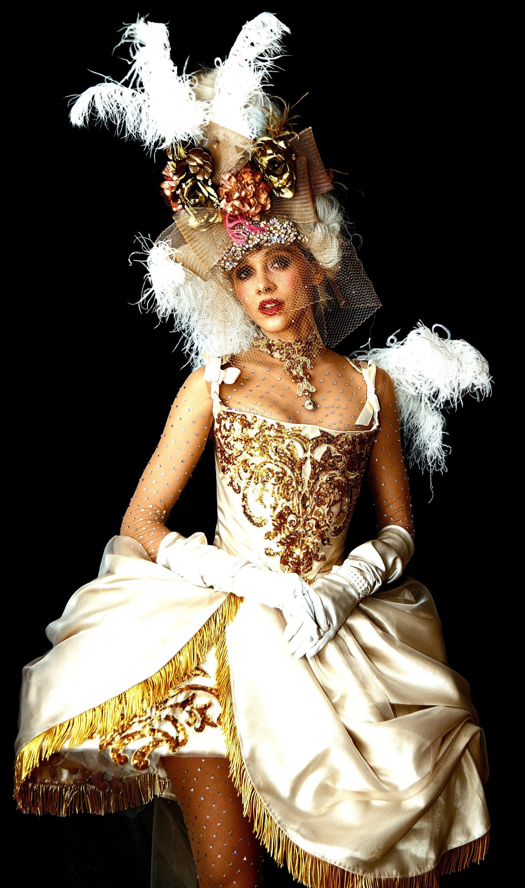
Costume Designer
Angela Buscemi
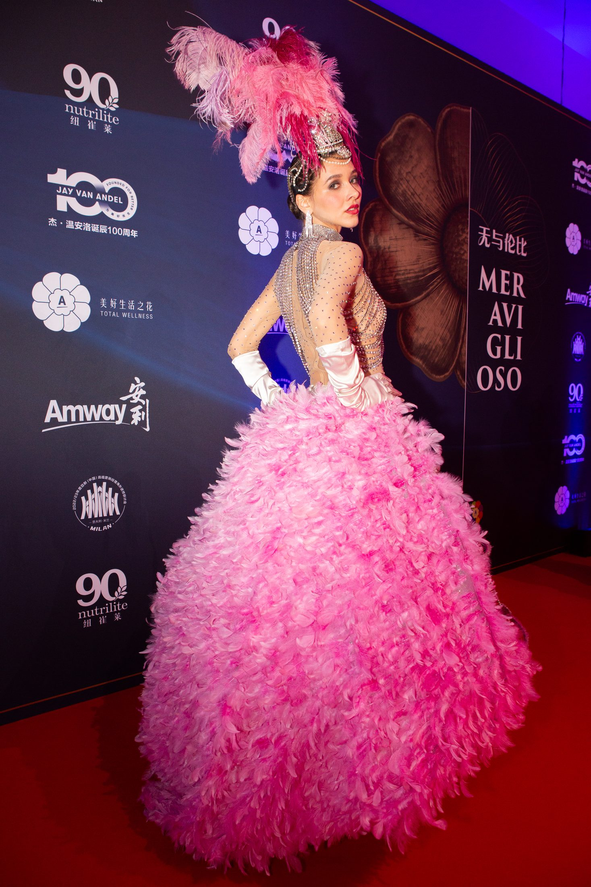
Amway China Gala DinnerMERAVIGLIOSO
Palazzo del Ghiaccio | Milan, Italy | May 7th, 2024
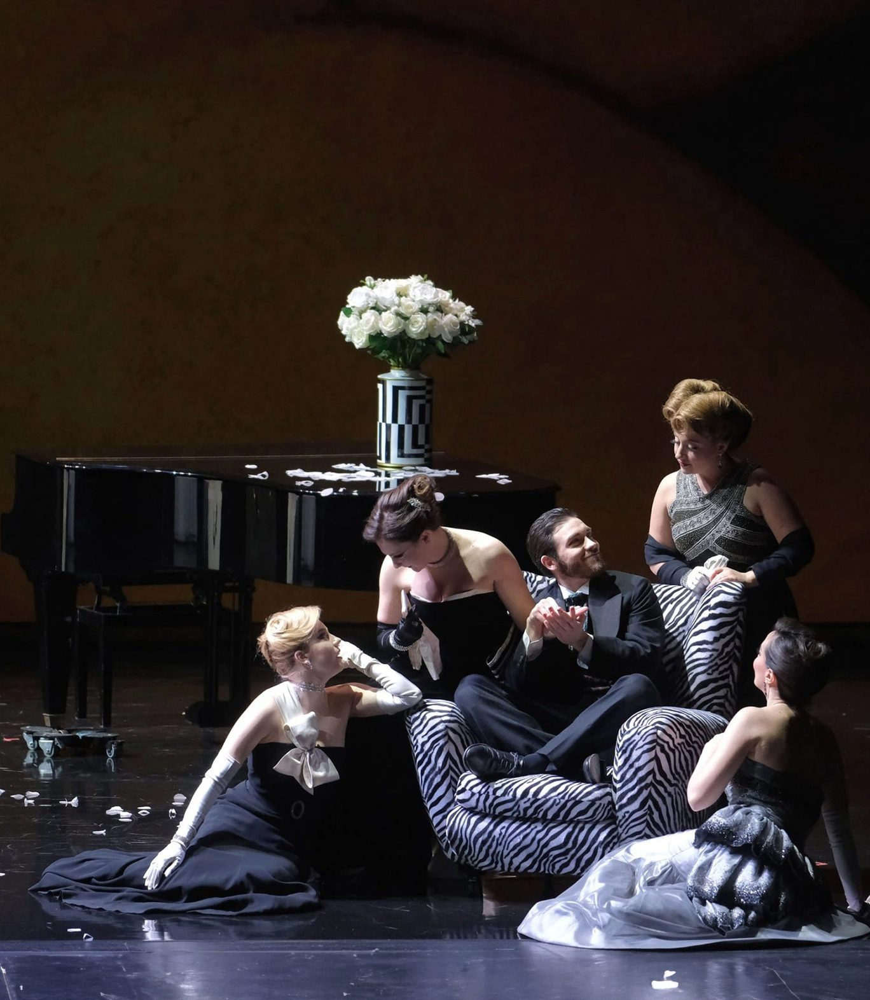
- MagdaMariangela Sicilia
- LisetteEleonora Bellocci
- RuggeroGaleano Salas
- PrunierMatteo Roma
- RambaldoGëzim Myshketa
- Yvette/GeorgetteAmelie Hois
- Bianca/LoletteSara Rossini
- Suzy/GabrielleMarta Pluda
- Gobin/AdolfoGilles Munguia
- Perichaud/RabonnierRenzo Ran
- Crebillon/MaggiordomoCarlo Feola
La rondine - G. PucciniRegia: Stefano Vizioli
Fondazione Arena di Verona / Teatro Filarmonico / 2024
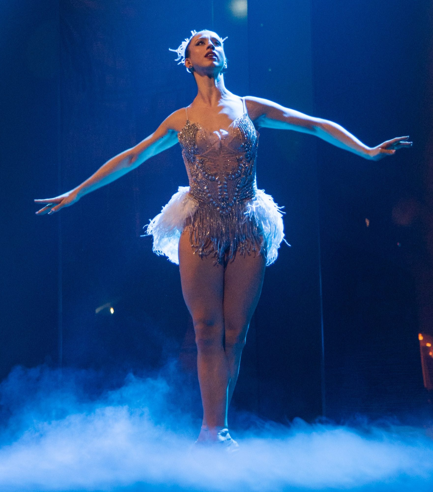
Amway China Gala DinnerMERAVIGLIOSO
Palazzo del Ghiaccio | Milan, Italy | May 7th, 2024
Prima ballerina - VIRNA TOPPI
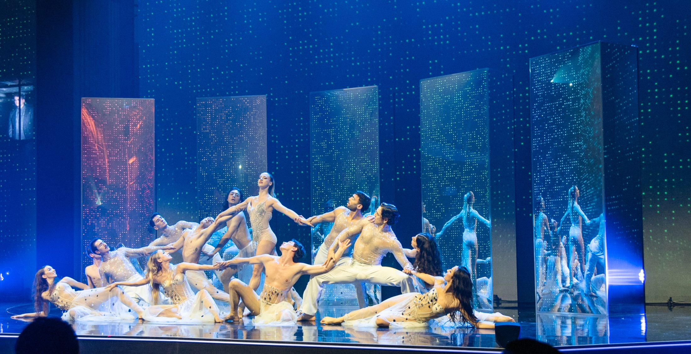
Amway China Gala DinnerMERAVIGLIOSO
Palazzo del Ghiaccio | Milan, Italy | May 7th, 2024
Prima ballerina - VIRNA TOPPI
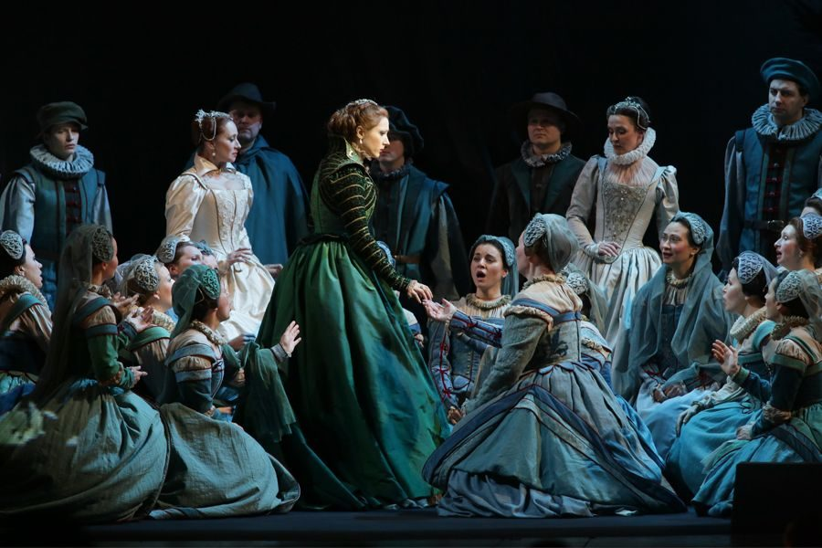
DON CARLOSDi Giuseppe Verdi
Regia: Giorgio Barberio Corsetti
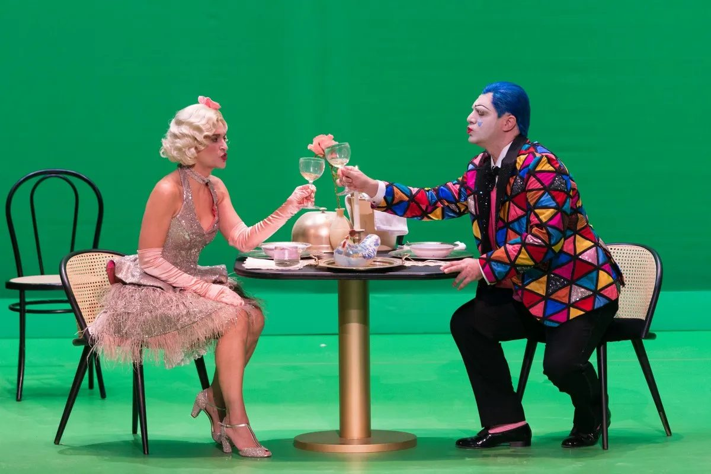
I PAGLIACCIdi Ruggero Leoncavallo
Regia: Cristian Taraborrelli
Teatro Carlo Felice / Genova / 2021
Colombina Serena Gamberoni / Arlecchino Matteo Falcier
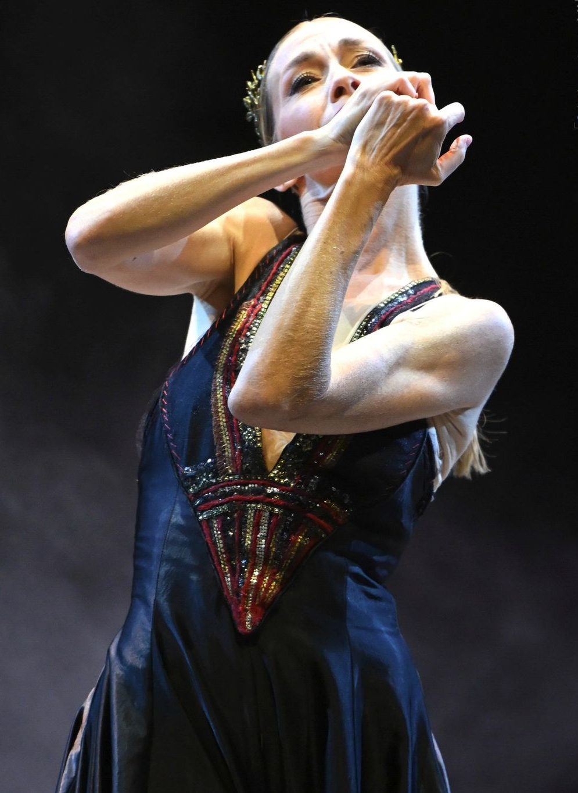
Eleonora Abbagnato in Giovanna D'ArcoCoreografia di Ermanno Sbezzo
Foto: Cristian Castaldi
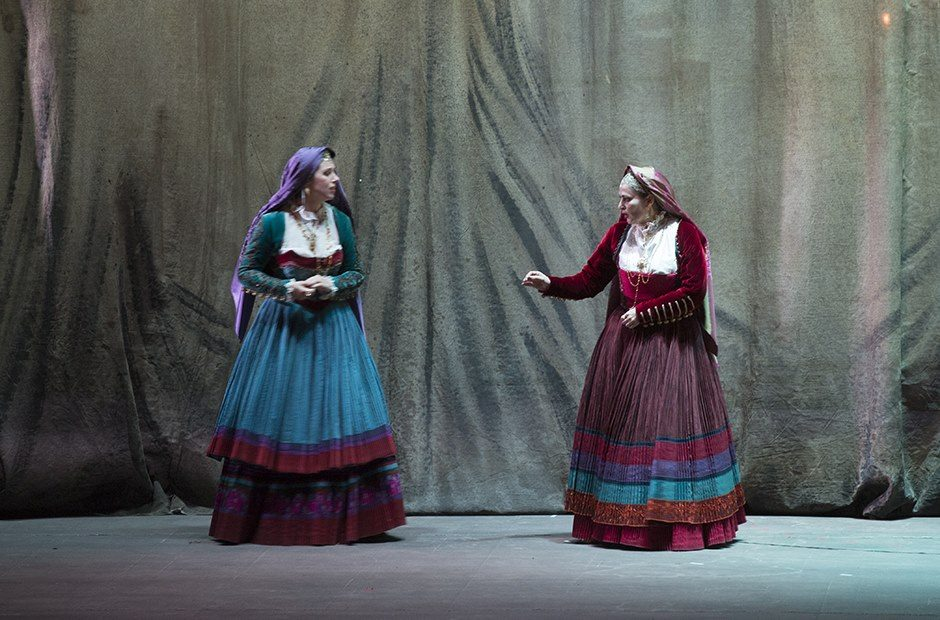
La Jura di Gavino GabrielRegia di Cristian Taraborrelli
Teatro Lirico di Cagliari / 2015
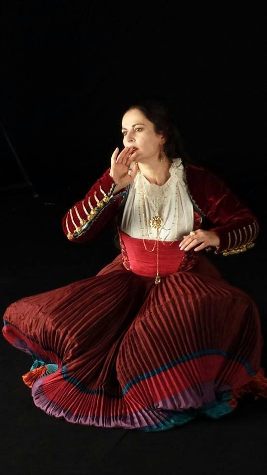
La Jura di Gavino GabrielRegia di Cristian Taraborrelli
Teatro Lirico di Cagliari / 2015
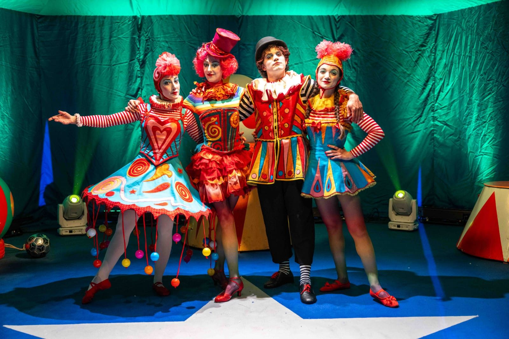
Winter CircusRegia di Cristian Taraborrelli
Produzione: FilmmasterEvents
Industrial Village / Torino / 2023

I PAGLIACCIdi Ruggero Leoncavallo
Regia: Cristian Taraborrelli
Teatro Carlo Felice / Genova / 2021